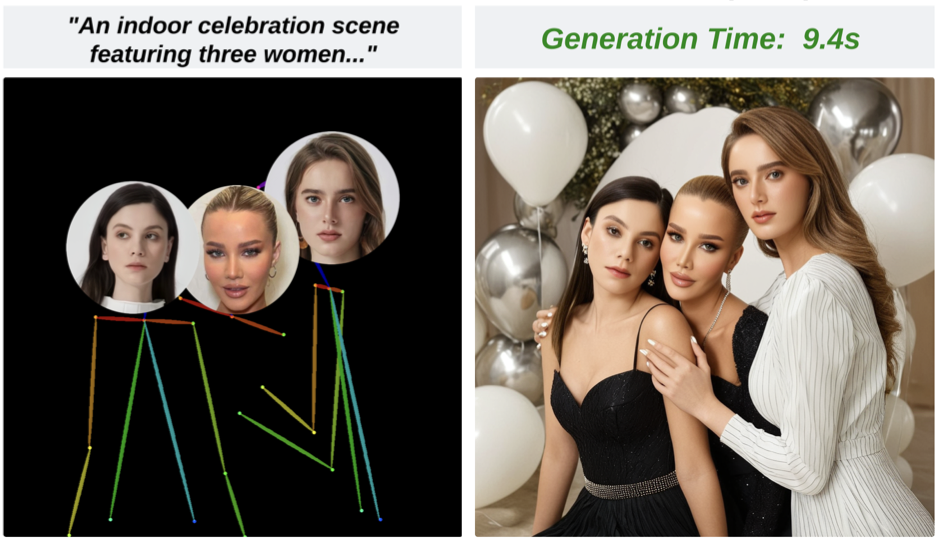
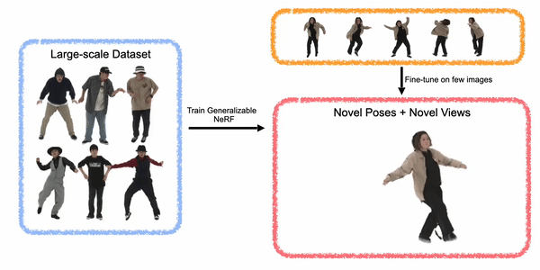
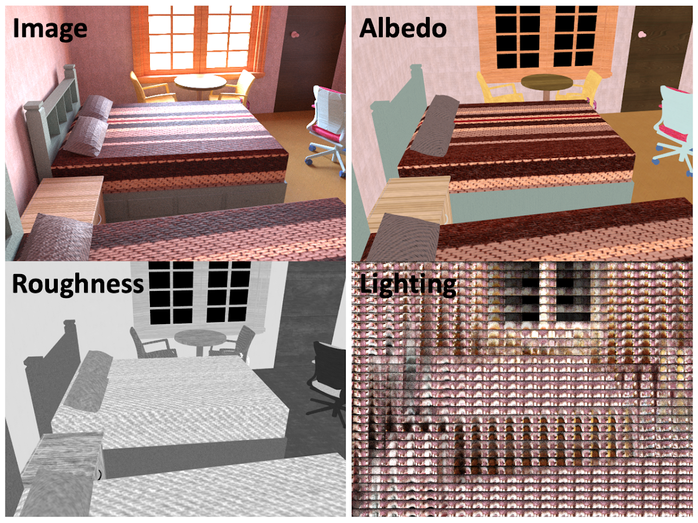
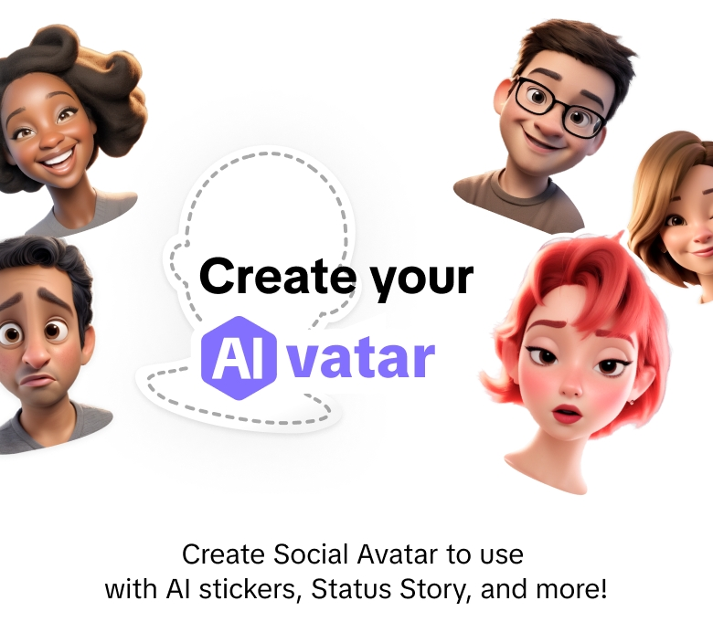
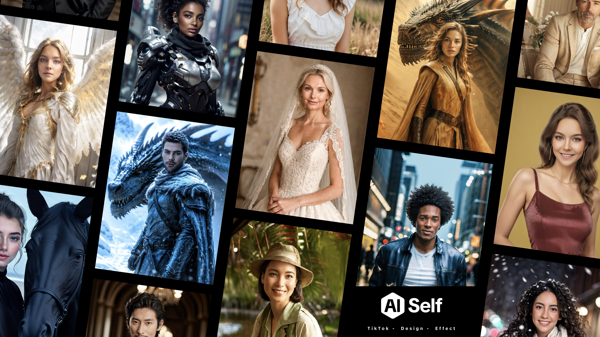
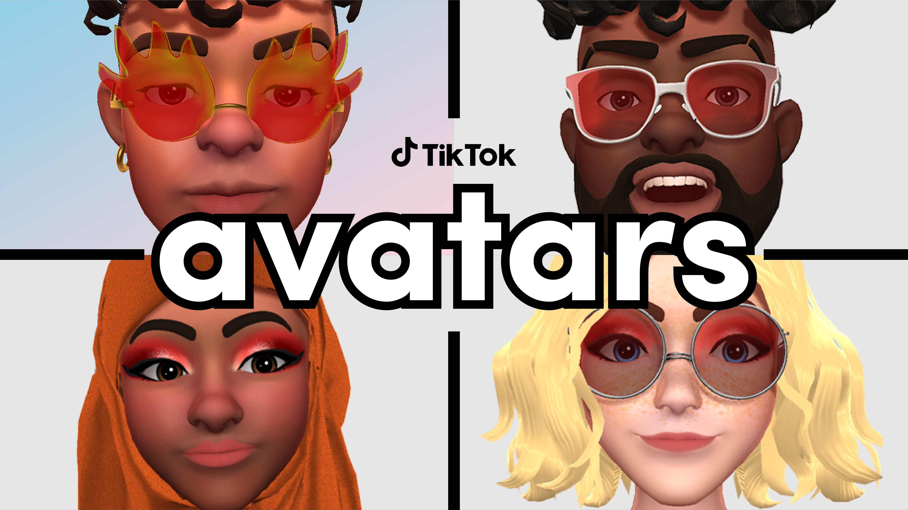

Shen Sang桑燊
Research Scientist · Cantina
I am a Research Scientist at Cantina, where I work on generative foundation models. Before that, I was a Senior Research Scientist, focusing on generative AI, at the Intelligent Creation team at ByteDance / TikTok.
I received my master's degree from UC San Diego, where I was fortunate to work with Prof. Manmohan Chandraker at the Visual Computing Center.
shen[at]cantina[dot]ai
News
2026.09 ✨ I joined Cantina as a Research Scientist, working on generative foundation models.
2026.02 Lynx is accepted to CVPR 2026.
2025.09 Lynx is released, feel free to try our latest personalized video generation model!
2025.02 COAP and ID-Patch are accepted to CVPR 2025.
2024.02 TikTok AI Self has been launched and is available globally.
2023.07 ActorsNeRF is accepted to ICCV 2023.
2023.05 TikTok AI Avatars is launched globally.
2022.08 AgileAvatar is accepted to SIGGRAPH Asia 2022.
2022.06 TikTok Avatars is launched globally.
Research
I currently work on video foundation models, with a focus on building generative models that understand and synthesize dynamic visual content, including world models, video generation, and editing. Over the past few years, I have worked extensively on personalized image and video generation, while also exploring efficient training and inference methods. Prior to this, my research focused on 3D vision and graphics, particularly in areas such as 3D reconstruction and neural relighting.
-
-

-

-

-

-
 AgileAvatar: Stylized 3D Avatar Creation via Cascaded Domain BridgingSIGGRAPH Asia 2022
AgileAvatar: Stylized 3D Avatar Creation via Cascaded Domain BridgingSIGGRAPH Asia 2022 -

-

Products

TikTok AI-Moji
2024
AI-powered emoji avatars that transform user selfies into expressive digital characters.

TikTok AI Self
2024
AI-powered self-portrait avatars that generate photorealistic digital characters.
TikTok AI Avatars
2023
AI-powered avatar generation that creates stylized digital characters.

Service
Reviewer: CVPR (2023–2025), ICCV (2023), ICLR (2023), AAAI (2023–2024), SIGGRAPH (2025), SIGGRAPH Asia (2023), TMM, C&G